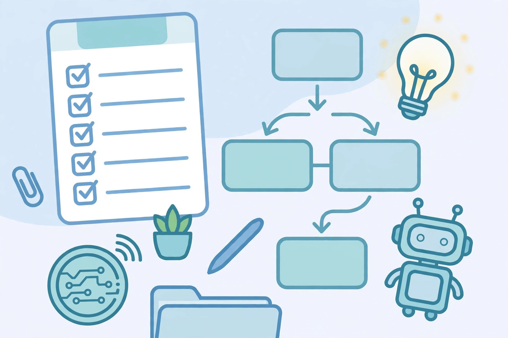

Chapter 96: AI in Payments Operations and Capstone
AI in Customer Service for Payments

Advanced About 1:56 Narration: 1:56 Reading time: about 1 min (291 words) Status: Not completed yet

By the end of this lesson, you will be able to explain ai in customer service for payments. Customers ask the same payment questions again and again, where is my money, why has it not arrived, what is the charge, and AI can answer many of those questions fast, but only inside clear limits. Imagine a customer who sent fifteen thousand rupees by an instant payment at ten in the morning and asks at noon where it is.
Chapter 96 of 99, Course 9: The Business Analyst at Work. Lesson 4 of 8 in this chapter. Position 844 of 874 in the full course. See the full contents.
In this lesson
So every AI answer needs a source, a limit on what it may promise, and a simple path to a human in one step, not a loop that keeps the customer talking to a machine.
How it flows
- Customers ask the same payment questions again
Customers ask the same payment questions again and again
Now playing
Selected point - AI assistant can check the payment status
An AI assistant can check the payment status, see that it was credited at ten oh two, and reply with the reference number, the time and the beneficiary name.
Now playing
Selected point - Cross border payment of fifty thousand rupees
If a cross border payment of fifty thousand rupees is still showing as in transit, the assistant must not invent a delivery time or say it will arrive today when it does not know.
Now playing
Selected point - Escalation rule
That is the escalation rule, and you must write it down.
Now playing
Selected point - Worst failure
The worst failure is a confident wrong answer, for example telling a customer a failed payment was successful, because the customer stops chasing it and the money sits unclaimed.
Now playing
Selected point
Listen to this lesson
Tap play to start the narration, then read along below.
Listening length: 1:56
Not started yet
0:00 / 1:56
Flow of the explanation in this lesson.
Customers ask the same payment questions again: Customers ask the same payment questions again and again
AI in Customer Service for Payments
What you will learn
Your objective. By the end of this lesson, you will be able to explain ai in customer service for payments. Customers ask the same payment questions again and again, where is my money, why has it not arrived, what is the charge, and AI can answer many of those questions fast, but only inside clear limits.
Why it matters. Imagine a customer who sent fifteen thousand rupees by an instant payment at ten in the morning and asks at noon where it is.
Chapter objective: AI in reconciliation, exceptions, fraud and customer service, writing requirements for AI systems, and the capstone.
Key learning points
- Customers ask the same payment questions again
- AI assistant can check the payment status
- Cross border payment of fifty thousand rupees
- Escalation rule
- Worst failure
Key terms
Payment flow diagram showing AI in Customer Service for Payments.
Practise this lesson
Exercise
Work out what the beneficiary receives for a $10,000 payment under OUR, SHA and BEN.
Use the charge arrangement rules in this lesson and the correspondent and beneficiary bank fees named in the lesson.
- What to do. Calculate the amount credited under each of the three arrangements and state who pays each fee.
Correct result. Under OUR the sender pays all charges and the beneficiary receives the full amount. Under SHA the sender pays the sending charges and the beneficiary pays the receiving charges. Under BEN the beneficiary pays all charges and receives the amount less all fees.
Why. The charge arrangement decides who pays and how much arrives. A customer who was promised the full amount and receives less will complain, and the complaint lands on the analyst.
Check your understanding
Check your understanding
Answer all 3 questions to see your score. Your result is saved in this browser and shown on your dashboard.
Q1. Which of the following best describes ai in customer service for payments?
Q2. Work out what the beneficiary receives for a $10,000 payment under OUR, SHA and BEN.
Q3. Which statement is the lesson's stated takeaway?
Takeaway and next step
What to remember
So every AI answer needs a source, a limit on what it may promise, and a simple path to a human in one step, not a loop that keeps the customer talking to a machine.
Follow a payment through every stage, from instruction to beneficiary credit, and note where it can stop.
Open the Payment Lifecycle Simulator →
Builds on "AI in Fraud Detection".
Advanced depth
Worked at message level
Worked example. Customers ask the same payment questions again and again
When it goes wrong. It must escalate complaints, disputed amounts, blocked accounts, fraud reports and anything where the customer is upset or the money is at risk.
Transcript and full text
Show transcript
Customers ask the same payment questions again and again, where is my money, why has it not arrived, what is the charge, and AI can answer many of those questions fast, but only inside clear limits. Imagine a customer who sent fifteen thousand rupees by an instant payment at ten in the morning and asks at noon where it is.
An AI assistant can check the payment status, see that it was credited at ten oh two, and reply with the reference number, the time and the beneficiary name. That is a safe answer because it comes straight from the system of record, not from a guess. The risk starts when the assistant is asked something it cannot verify.
If a cross border payment of fifty thousand rupees is still showing as in transit, the assistant must not invent a delivery time or say it will arrive today when it does not know. It must say what it knows, that the payment left on Monday and is with the intermediary bank, and then offer a human agent for a firm update.
That is the escalation rule, and you must write it down. AI may answer status, charges and cut off times from live data. It must escalate complaints, disputed amounts, blocked accounts, fraud reports and anything where the customer is upset or the money is at risk.
The worst failure is a confident wrong answer, for example telling a customer a failed payment was successful, because the customer stops chasing it and the money sits unclaimed. So every AI answer needs a source, a limit on what it may promise, and a simple path to a human in one step, not a loop that keeps the customer talking to a machine.
Full lesson text (all scenes)
AI in Customer Service for Payments
Customers ask the same payment questions again and again, where is my money, why has it not arrived, what is the charge, and AI can answer many of those questions fast, but only inside clear limits. Imagine a customer who sent fifteen thousand rupees by an instant payment at ten in the morning and asks at noon where it is.
An AI assistant can check the payment status, see that it was credited at ten oh two, and reply with the reference number, the time and the beneficiary name. That is a safe answer because it comes straight from the system of record, not from a guess. The risk starts when the assistant is asked something it cannot verify.
If a cross border payment of fifty thousand rupees is still showing as in transit, the assistant must not invent a delivery time or say it will arrive today when it does not know. It must say what it knows, that the payment left on Monday and is with the intermediary bank, and then offer a human agent for a firm update.
That is the escalation rule, and you must write it down. AI may answer status, charges and cut off times from live data. It must escalate complaints, disputed amounts, blocked accounts, fraud reports and anything where the customer is upset or the money is at risk.
The worst failure is a confident wrong answer, for example telling a customer a failed payment was successful, because the customer stops chasing it and the money sits unclaimed. So every AI answer needs a source, a limit on what it may promise, and a simple path to a human in one step, not a loop that keeps the customer talking to a machine.
Completing a lesson updates your progress dashboard on the homepage.
Scene timestamps are estimated by allocating the narration text proportionally across the real audio length. The audio playback position is the source of truth: pause freezes the visual, seeking restores the correct scene, replay restarts the scene animation.
Real-World Example
Imagine a customer who sent fifteen thousand rupees by an instant payment at ten in the morning and asks at noon where it is. The worst failure is a confident wrong answer, for example telling a customer a failed payment was successful, because the customer stops chasing it and the money sits unclaimed.
Sources
The official rules and standards this lesson is based on. Check them to verify the detail.
More in this chapter
AI in Reconciliation Matching ›
Writing Requirements for AI Systems ›
 Defining Success Metrics and Handling AI Failures ›
Defining Success Metrics and Handling AI Failures ›
 Capstone Brief: Design an AI-Assisted Payments Feature ›
Capstone Brief: Design an AI-Assisted Payments Feature ›